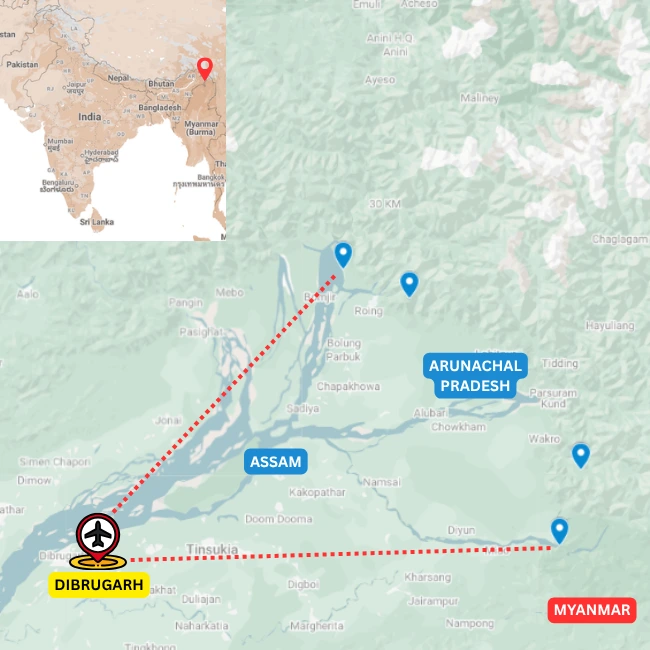

Tours
Walks and Treks · Eastern Arunachal
Walking Holiday in Eastern Arunachal Pradesh
Walks in India's far east
Overview
Walk through the far eastern edge of India
This walking holiday is designed around eastern Arunachal's forests, rivers, villages and frontier landscapes.
It combines gentle exploration with cultural encounters and remote natural settings.
Routes are customized around season, permits and group comfort.
Ride Details
Route character

Journey Flow
The tour in sections
This is an indicative flow. The final route is shaped around your dates, pace, group profile and local conditions.
Namdapha National Park
Begin in one of India's great eastern rainforests, walking through dense forest, riverine habitat and bird-rich trails at the edge of the Patkai range.
Kamlang Wildlife Sanctuary
Move into quieter forest country around Kamlang, with walks shaped by river valleys, village edges and the rich biodiversity of eastern Arunachal.
Mehao Wildlife Sanctuary
Explore the Mehao landscape around Roing, where lakes, forest trails and lower Himalayan foothills create a gentler but deeply rewarding walking section.
Detailed itinerary
Ask for the full route plan and cost
The itineraries are unique, so the detailed route and cost are shared directly after understanding your dates, pace and group size.
Photo Gallery
Moments from India's far east
Enquire
Plan Walking Holiday in Eastern Arunachal Pradesh
Share a few details and we will get back to you with the best route, duration and cost options.